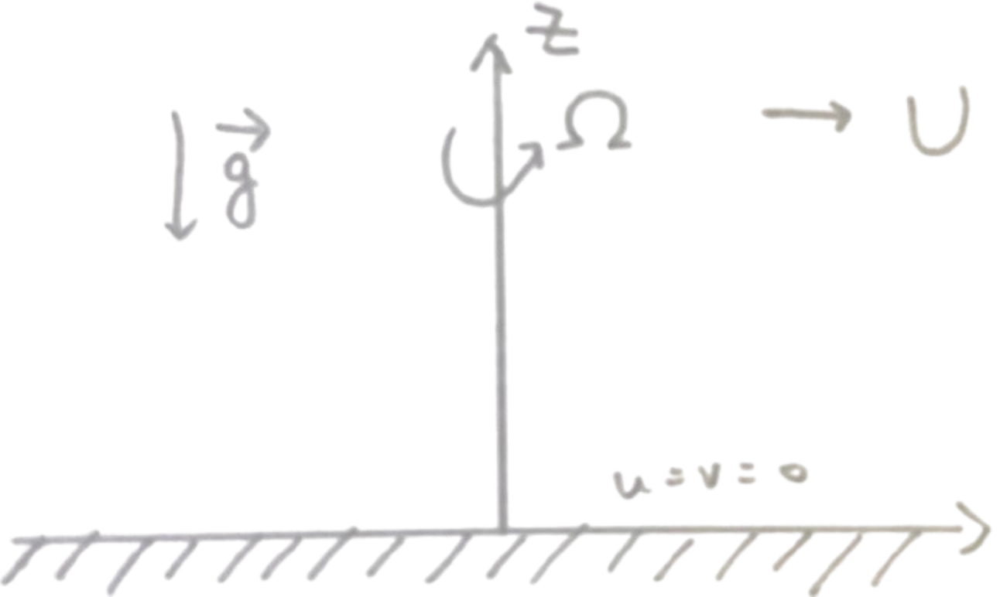

The Ekman Layer
The role of friction in geophysical fluid dynamics is closely related to the structure of the frictional layer which appears on a rigid surface perpendicular to the rotation vector.
Such friction layers, in conjunction with the constraints of the Taylor-Proudman theorem will be shown to exert a profound influence on the dynamics of the flow remarkably far from the regions which are directly affected by viscosity.
The fundamental character of the friction region us called the Ekman layer

Consider the motion of a homogeneous, incompressible fluid rotating with angular velocity $\boldsymbol{\Omega}$.
A rigid wall at $z = 0$ is perpendicular to $\boldsymbol{\Omega}$, a horizontally uniform flow of velocity $U$ is specified far from the wall
The governing equations of motion are
$$
\frac{\partial u}{\partial t}
+ u \frac{\partial u}{\partial x}
+ v \frac{\partial u}{\partial y}
+ w \frac{\partial u}{\partial z}
- fv
= -\frac{1}{\rho} \frac{\partial p}{\partial x}
+ A_v \frac{\partial^2 u}{\partial z^2}
+ A_H \left( \frac{\partial^2 u}{\partial x^2} + \frac{\partial^2 u}{\partial y^2} \right)
$$
$$
\frac{\partial v}{\partial t}
+ u \frac{\partial v}{\partial x}
+ v \frac{\partial v}{\partial y}
+ w \frac{\partial v}{\partial z}
+ fu
= -\frac{1}{\rho} \frac{\partial p}{\partial y}
+ A_v \frac{\partial^2 v}{\partial z^2}
+ A_H \left( \frac{\partial^2 v}{\partial x^2} + \frac{\partial^2 v}{\partial y^2} \right)
$$
$$
\frac{\partial w}{\partial t}
+ u \frac{\partial w}{\partial x}
+ v \frac{\partial w}{\partial y}
+ w \frac{\partial w}{\partial z}
= -\frac{1}{\rho} \frac{\partial p}{\partial z} - g
+ A_v \frac{\partial^2 w}{\partial z^2}
+ A_H \left( \frac{\partial^2 w}{\partial x^2} + \frac{\partial^2 w}{\partial y^2} \right)
$$
$$
\frac{\partial u}{\partial x}
+ \frac{\partial v}{\partial y}
+ \frac{\partial w}{\partial z} = 0
$$
The coefficients $A_H$ and $A_V$ are called the horizontal and vertical turbulent viscosity coefficients respectively,
$f = 2\Omega$